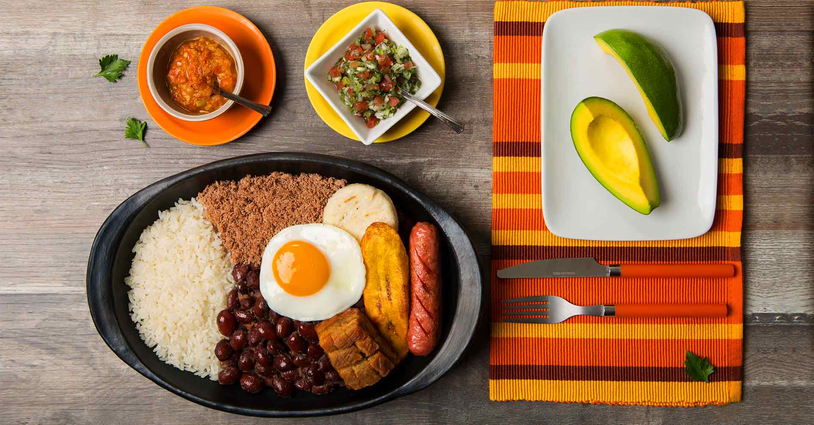

RECETA DE BANDEJA PAISA
🥘 Ingredientes (para 4 personas):
- 500 g de fríjoles cargamanto (rojos)
- 300 g de carne molida
- 4 chorizos antioqueños
- 4 tajadas de chicharrón de cerdo
- 2 tazas de arroz blanco cocido
- 4 huevos
- 1 plátano maduro grande (en tajadas)
- 1 aguacate (en 4 porciones)
- 4 arepas pequeñas
- 2 tomates y 1 cebolla para el hogao (salsa criolla)
- Sal, comino, ajo y aceite al gusto
👩🍳 Preparación paso a paso:
1. Cocinar los fríjoles:
- Remoja los fríjoles en agua desde la noche anterior.
- Cocínalos en olla a presión con agua, sal, comino, ajo y cebolla durante unos 45 minutos o hasta que estén blandos.
2. Preparar el hogao (salsa criolla):
- Sofríe en una sartén cebolla picada y tomate en cubos con sal y comino.
- Cocina a fuego lento hasta que esté espeso. Agrégalo a los fríjoles cocidos y deja hervir 10 minutos más.
3. Freír el chicharrón:
- Sazona con sal y cocina a fuego medio en su propia grasa hasta que quede dorado y crujiente.
4. Cocinar la carne molida:
- Sofríe ajo, cebolla y tomate. Agrega la carne y condimenta al gusto. Cocina hasta que esté bien dorada.
5. Freír el plátano:
- Corta en tajadas largas y fríelas en aceite caliente hasta que estén doradas.
6. Preparar el arroz:
- Cocina arroz blanco como de costumbre o recaliéntalo si ya está listo.
7. Freír los chorizos y los huevos:
- Fríe los chorizos hasta que estén bien dorados.
- Fríe los huevos con la yema blanda si prefieres el estilo tradicional.
🍽️ Montaje:
Sirve en una bandeja grande o plato amplio:
- Arroz, fríjoles, carne molida, chicharrón, chorizo, plátano maduro, huevo frito, arepa y una porción de aguacate.
